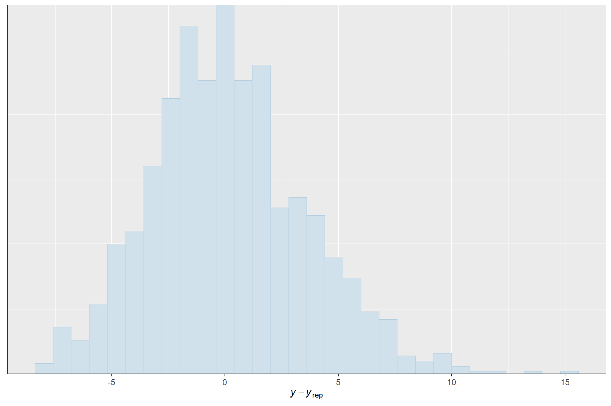
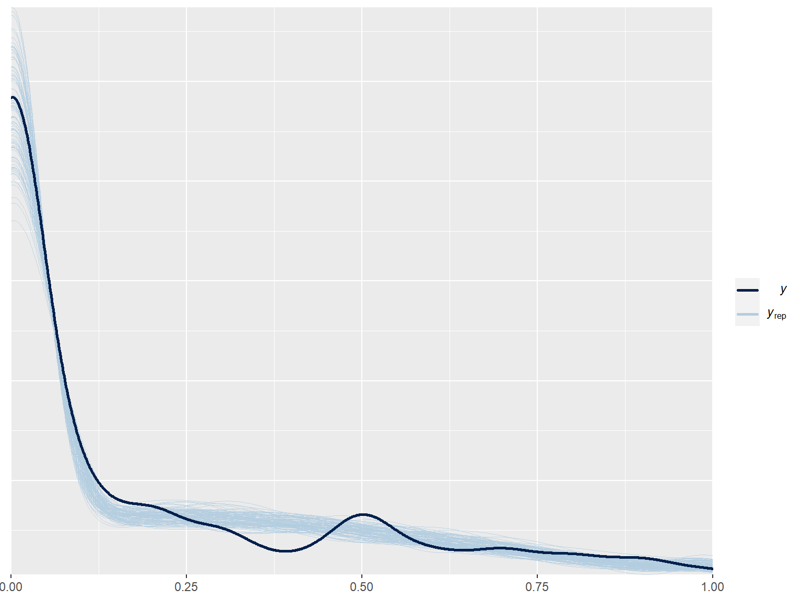

Exploring Bayesian inference via ‘canned solutions’
Motivation
As a segue into model building in Stan, we will use a ‘canned solution’ for Bayesian inference via Stan’s HMC sampler in this lab.
Some of the major ‘canned solutions’ that allow users to estimate and process Stan models by calling pre-implemented R functions include:
- brms: Bayesian Regression Models using ‘Stan’, covering a growing number of model types
- rstanarm: Bayesian Applied Regression Modeling via Stan, with an emphasis on hierarchical/multilevel models
- rethinking: An R package that accompanies McElreath’s course and book Statistical Rethinking
- edstan: Stan Models for Item Response Theory
Comparison: Pre-implemented model types

A minor note on multiple imputation in brms
Newer versions of brms now handle missing
values:
- You can either generate multiply imputed data sets before model fitting, run multiple chains across each imputation, and then pool the posterior samples (\(\rightarrow\) fast, but heavy on CPU and RAM)
- Alternatively, you can use Bayesian imputation during model
fitting:
brmswill treat missing values as unknown quantities and jointly estimate your structural model of interest along with an imputation model (\(\rightarrow\) slow)
Application: A linear model in brms
Choosing priors
brms uses default priors for certain “classes” of
parameters. To check these defaults, supply the model formula, data, and
generative model (i.e., family and link function) to
brms::get_prior() and investigate the resulting object.
# Get default priors
default_priors <- brms::get_prior(
sup_afd ~ # outcome
la_self * # immigration preferences
se_self + # redistribution preferences
fem + # gender
east + # east/west residence
age, # age
data = gles, # data
family = gaussian(link = "identity") # family and link
)
default_priorsNote: Missing entries in the prior column
denote flat/uniform priors.
Define custom priors
Suppose you don’t like the default priors. You can create a
brmsprior object by specifying the desired distributional
properties of parameters of various classes:
custom_priors <- c(
brms::prior(normal(0, 5), class = b), # normal slopes
brms::prior(normal(0, 5), class = Intercept), # normal intercept
brms::prior(cauchy(0, 5), class = sigma) # half-cauchy SD
)
custom_priorsFitting the model
Lastly, you can fit the model using brms::brm().
Familiarize yourself with the function arguments and relate them to the
concepts discussed in the previous two lectures.
Notes:
- Model compilation and estimation may take a while.
- If, for whatever reason,
brmsthrows an error when trying to callrstanon your machine, simply proceed to the next exercise. The requiredbrmsfitobject will be pre-loaded.
lm_brms <- brms::brm(
sup_afd ~ # outcome
la_self * # immigration preferences
se_self + # redistribution preferences
fem + # gender
east + # east/west residence
age, # age
data = gles, # data
family = gaussian(link = "identity"), # family and link
prior = custom_priors, # priors
chains = 4L, # number of chains
iter = 2000L, # number of iterations per chain
warmup = 1000L, # number of warm-up samples per chain
algorithm = "sampling", # algorithm (HMC/NUTS)
backend = "rstan", # backend (rstan)
seed = 20221104L # seed
)Model summary and generic diagnostics
Print the model summary an familiarize yourself with the output.
Check Rhat for any signs of non-convergence.
## Family: gaussian
## Links: mu = identity; sigma = identity
## Formula: sup_afd ~ la_self * se_self + fem + east + age
## Data: gles (Number of observations: 1321)
## Draws: 4 chains, each with iter = 2000; warmup = 1000; thin = 1;
## total post-warmup draws = 4000
##
## Population-Level Effects:
## Estimate Est.Error l-95% CI u-95% CI Rhat Bulk_ESS Tail_ESS
## Intercept -3.81 0.42 -4.64 -2.97 1.00 2962 2990
## la_self 0.30 0.05 0.20 0.41 1.00 2528 2968
## se_self -0.12 0.06 -0.24 0.01 1.00 2603 2684
## fem -0.59 0.14 -0.86 -0.33 1.00 5037 2966
## east 0.42 0.15 0.13 0.72 1.00 4903 2943
## age -0.01 0.00 -0.02 -0.01 1.01 6292 2701
## la_self:se_self 0.01 0.01 -0.01 0.03 1.00 2461 2645
##
## Family Specific Parameters:
## Estimate Est.Error l-95% CI u-95% CI Rhat Bulk_ESS Tail_ESS
## sigma 2.44 0.05 2.35 2.54 1.00 4310 2658
##
## Draws were sampled using sampling(NUTS). For each parameter, Bulk_ESS
## and Tail_ESS are effective sample size measures, and Rhat is the potential
## scale reduction factor on split chains (at convergence, Rhat = 1).Visual diagnostics
Explore the following visualizations of common generic diagnostics:
brms::mcmc_plot(lm_brms, type = "acf") # Autocorrelation
brms::mcmc_plot(lm_brms, type = "trace") # Trace plotsCanned quantities of interest: Expected values
brms also offers pre-implemented functions for plotting
conditional expectations. Needless to say, these are not as flexible as
manually implemented solutions. But they can take you a long way in
exploring substantively meaningful quantities of interest at minimum
effort.
For instance, for the continuous-by-continuous interaction of
la_self and se_self,
brms::conditional_effects() will give you:
- The conditional expectation of
sup_afdas a function ofla_self, at the mean ofse_selfand all other covariates - The conditional expectation of
sup_afdas a function ofse_self, at the mean ofla_selfand all other covariates - The conditional expectation of
sup_afdas a function ofla_selfat three characteristic values ofse_self(mean(se_self) + c(-1, 0, 1) * sd(se_self)), fixing all else at mean values
brms::conditional_effects(lm_brms,
effects = c("la_self", "se_self", "la_self:se_self"))Canned estimation, manual processing
For more flexibility, you can always extract the posterior samples of the coefficients and process them manually. We will illustrate this through a simple example.
You can extract posterior draws of the model parameters from a
brmsfit object using the
brms::prepare_predictions() function. The function returns
a nested list; the $dpars sublist contains, among other,
the posterior draws and the model data. Check it out below:
str(brms::prepare_predictions(lm_brms)$dpars)As you can see, the function output returns information pertaining to
the systematic component of the model (incl. data and coefficients) in
$dpars$mu$fe, and everything pertaining to the auxiliary
scale parameter, \(\sigma\), in
$dpars$mu$sigma.
Extract the posterior samples of the model coefficients. Check the dimensions of the object. What’s in the rows, what’s in the columns?
# Get posterior samples of coefficients
...
# Check dimensions
...# Get posterior samples of coefficients
beta <- brms::prepare_predictions(lm_brms)$dpars$mu$fe$b
# Check dimensions
dim(beta)Calculate the posterior distribution of the expected value of AfD support for a hypothetical male, 60 year-old resident of West Germany who holds strong anti-immigration and centrist redistribution preferences. Report the posterior median and 95% credible interval.
# Get posterior samples of coefficients
beta <- brms::prepare_predictions(lm_brms)$dpars$mu$fe$b
# Define covariate scenario
x_star <- c(
1, # Leading 1 to multiply the intercept
10, # Very strong anti-immigration (la_self = 10)
5, # Centrist on redistribution (se_self = 5)
0, # male (fem = 0)
0, # West-German (east = 0)
60, # 60 years of age (age = 60)
10 * 5 # Multiplicative term (la_self * se_self)
)
# Posterior distribution of the expected value
exp_val <- ...
# Quantile summary
...# Get posterior samples of coefficients
beta <- brms::prepare_predictions(lm_brms)$dpars$mu$fe$b
# Define covariate scenario
x_star <- c(
1, # Leading 1 to multiply the intercept
10, # Very strong anti-immigration (la_self = 10)
5, # Centrist on redistribution (se_self = 5)
0, # male (fem = 0)
0, # West-German (east = 0)
60, # 60 years of age (age = 60)
10 * 5 # Multiplicative term (la_self * se_self)
)
# Posterior distribution of the expected value
exp_val <- beta %*% x_star
# Quantile summary
quantile(exp_val, c(.5, .025, .975))Model code
brms compiles a Stan model program in C++ in the
rstan backend according to the brm() function
arguments supplied by the user.
Explore the underlying Stan model code and try to make sense of it.
brms::stancode(lm_brms)## // generated with brms 2.18.0
## functions {
## }
## data {
## int<lower=1> N; // total number of observations
## vector[N] Y; // response variable
## int<lower=1> K; // number of population-level effects
## matrix[N, K] X; // population-level design matrix
## int prior_only; // should the likelihood be ignored?
## }
## transformed data {
## int Kc = K - 1;
## matrix[N, Kc] Xc; // centered version of X without an intercept
## vector[Kc] means_X; // column means of X before centering
## for (i in 2:K) {
## means_X[i - 1] = mean(X[, i]);
## Xc[, i - 1] = X[, i] - means_X[i - 1];
## }
## }
## parameters {
## vector[Kc] b; // population-level effects
## real Intercept; // temporary intercept for centered predictors
## real<lower=0> sigma; // dispersion parameter
## }
## transformed parameters {
## real lprior = 0; // prior contributions to the log posterior
## lprior += normal_lpdf(b | 0, 5);
## lprior += normal_lpdf(Intercept | 0, 5);
## lprior += cauchy_lpdf(sigma | 0, 5)
## - 1 * cauchy_lccdf(0 | 0, 5);
## }
## model {
## // likelihood including constants
## if (!prior_only) {
## target += normal_id_glm_lpdf(Y | Xc, Intercept, b, sigma);
## }
## // priors including constants
## target += lprior;
## }
## generated quantities {
## // actual population-level intercept
## real b_Intercept = Intercept - dot_product(means_X, b);
## }We will, of course, discuss Stan programs in-depth in the next session.
Bonus: Posterior predictive checks
Posterior predictive checks
Posterior predictive checks involve simulating the data-generating process to obtain replicated data given the estimated model. They can help us determine how well our model fits the data.
This usually involves two questions:
- Does the family yield an adequate generative model?
- Does a Gaussian (normal) data-generating processes produce realistic
replications of the observed values of
sup_afd(support for the AfD on the -5 to +5 scale)? - Does the simulated distribution of the replications match the observed distribution of the outcome in the sample?
- Does a Gaussian (normal) data-generating processes produce realistic
replications of the observed values of
- Does the systematic component accurately predict outcomes?
- Do our predictors – i.e., an interaction of redistribution and immigration preferences – accurately predict which individuals are more likely to support the AfD?
- How large is the observation-level discrepancy between simulated replications and observed data?
Distributional congruence
To check whether the generative model produces distributions of
replicated outcomes that match the distribution of the observed outcome,
we can compare the density of the observed outcome with those of, say,
ndraws = 100 simulations. Each simulation is based on one
post-warm-up sample from the posterior distribution.
brms::pp_check(lm_brms, ndraws = 100, type = "dens_overlay")So, what do you think?
Observation-level prediction error
To check the predictive accuracy of the model, we can investigate the distribution of observation-level prediction errors. A model with perfect fit would produce an error of \(0\) for all \(N\) observations.
Below, you see the distribution of errors for our linear model. What do you think?
brms::pp_check(lm_brms, ndraws = 1, type = "error_hist")## `stat_bin()` using `bins = 30`. Pick better value with `binwidth`.
Refit the model as a zero-one-inflated beta (ZOIB) regression
Zero-one-inflated beta (ZOIB) regression models bounded continuous outcomes on the unit (i.e., \([0,1]\)) interval. The ZOIB model is a GLM with a multi-family likelihood, meaning that its likelihood is composed of a mixture of several constitutive likelihoods. Specifically, it supplements a beta pdf for values \(y \in ]0, 1[\) with additional pmfs for the boundary values \(y \in \{0,1\}\).
Some background on the ZOIB model
To fully understand the model, we must quickly return to the beta distribution, which we previously characterized in terms of two strictly positive shape parameters, \(a>0\) and \(b>0\).
These shape parameters can also be expressed in terms of a location parameter \(\mu\) and a scale parameter \(\phi\), where \(a = \mu \cdot \phi\) and \(b = (1 - \mu) \cdot \phi\), with \(\mu \in [0, 1]\) and \(\phi > 0\).
Next to this reparameterized beta pdf, the model accommodates two Bernoulli pmfs: The first models 0/1 observations as a function of a probability parameter \(\text{zoi}\) (short for zero-one-inflation), the second models 1’s (as opposed to 0’s), conditional on observing a 0/1 observation, as a function of a probability parameter \(\text{coi}\) (short for conditional-one-inflation).
Taken together, the zero-one-inflated beta model is given by:
\[ p(y_i| \mu_i, \phi_i, \text{zoi}_i, \text{coi}_i) = \begin{cases} \text{Bernoulli}(1 | \text{zoi}_i) \times \text{Bernoulli}(0| \text{coi}_i)& \text{if } y = 0 \\ \text{Bernoulli}(1 | \text{zoi}_i) \times \text{Bernoulli}(1| \text{coi}_i)& \text{if } y = 1 \\ \text{Bernoulli}(0 | \text{zoi}_i) \times \text{Beta}(y| \mu_i \cdot \phi_i, (1 - \mu_i) \cdot \phi_i)& \text{if } y_i \in ]0,1[ \end{cases} \]
where
\[ \begin{align} \text{zoi}_i = & \text{invlogit}(\mathbf{x}_i^\prime{\beta}_{\text{zoi}}) \\ \text{coi}_i = & \text{invlogit}(\mathbf{x}_i^\prime{\beta}_{\text{coi}}) \\ \mu_i = & \text{invlogit}(\mathbf{x}_i^\prime{\beta}_{\mu}) \\ \phi_i = & \log(\mathbf{x}_i^\prime{\beta}_{\phi}) \end{align} \]
Note: Technically, we could use different predictors in each of these four equations. But to keep it “simple”, we will use the same \(\mathbf{x}_i\) across all four.Inference
To model a bounded continuous outcome on the unit interval, we must first rescale it. Therefore, we will transform the scale of AfD support to range from 0 to 1 (with midpoint 0.5) instead of -5 to +5 (with midpoint 0). No worries, we can always scale it back later on.
gles <- gles %>%
dplyr::mutate(
sup_afd_unit = scales::rescale(sup_afd, to = c(0, 1))
)We can fit in brms (note that the corresponding
brmsfit object will be pre-loaded):
zoib_brms <- brms::brm(
formula = bf(
sup_afd_unit ~ la_self * se_self, # Model for the mean of the beta
phi ~ la_self * se_self, # Model for the precision of the beta
zoi ~ la_self * se_self, # Model for zero/one inflation
coi ~ la_self * se_self # Conditional model for zero vs one infl.
),
data = gles, # data
family = zero_one_inflated_beta( # family and links
link = "logit",
link_phi = "log",
link_zoi = "logit",
link_coi = "logit"
),
prior = c( # priors
brms::prior(normal(0, 5), class = b),
brms::prior(normal(0, 5), class = Intercept)
),
chains = 4L, # number of chains
iter = 2000L, # number of iterations per chain
warmup = 1000L, # number of warm-up samples per chain
algorithm = "sampling", # algorithm (HMC/NUTS)
backend = "rstan", # backend (rstan)
future = TRUE, # use future for parallelization
seed = 20221104L # seed
)Posterior predictive checks
We first observe the distributional congruence of the ZOIB-generated outcome simulations.
brms::pp_check(zoib_brms, ndraws = 100, type = "dens_overlay")
We then turn to checking observation-level prediction errors.
brms::pp_check(zoib_brms, ndraws = 1, type = "error_hist")## `stat_bin()` using `bins = 30`. Pick better value with `binwidth`.What do you conclude? Does the ZOIB-family accurately model the observed sample-level distribution of the outcome? Are you happy with the predictive accuracy of our current systematic component?
Bonus: QOI or multi-family models
Quantities of interest
The (somewhat) annoying part with multi-family models is that the computation of substantively meaningful quantities of interest becomes a lot more intricate.
For ZOIB models, the expected values depends on coefficients from three different equations (for mathematical details, see Liu and Kong 2015):
\[ \begin{align} \mathbb{E}[y_i | \mathbf{x}_i] & = (1 - p_i) \left(q_i + (1 - q_i) \mu_i \right) \end{align} \]
where
\[ \begin{align} p_i & = \text{invlogit}(\mathbf{x}_i^\prime{\beta}_{\text{zoi}}) \times (1 - \text{invlogit}(\mathbf{x}_i^\prime{\beta}_{\text{coi}})) \\ q_i & = \text{invlogit}(\mathbf{x}_i^\prime{\beta}_{\text{coi}}) \times \text{invlogit}(\mathbf{x}_i^\prime{\beta}_{\text{zoi}}) \times (1 - p_i)^{-1} \\ \mu_i & = \text{invlogit}(\mathbf{x}_i^\prime{\beta}_{\mu}) \end{align} \]
Here, it really pays off to write a function. Note that the
rescale_to argument allows us to scale the outcome back to
the -5/+5 scale.
exp_val_zoib <- function(x,
b,
b_zoi,
b_coi,
rescale_to = NULL,
posterior_quantiles = c(.5, .025, .975)) {
# Get probabilities
mu <- plogis(b %*% x)
coi <- plogis(b_coi %*% x)
zoi <- plogis(b_zoi %*% x)
p <- zoi * (1 - coi)
q <- zoi * coi / (1 - p)
# Get expected value
exp_val <- as.vector((1 - p) * (q + (1 - q) * mu))
# Rescale
if (!is.null(rescale_to)) {
exp_val <- exp_val * abs(diff(rescale_to)) + rescale_to[1]
}
# Get posterior quantiles
exp_val_quantiles <- quantile(exp_val, posterior_quantiles)
# Value
return(exp_val_quantiles)
}We can then apply this function to get the expected value for a hypothetical individual with strong anti-immigration and centrist redistribution preferences:
# Get posterior samples of coefficients
b <- brms::prepare_predictions(zoib_brms)$dpars$mu$fe$b
b_phi <- brms::prepare_predictions(zoib_brms)$dpars$phi$fe$b
b_zoi <- brms::prepare_predictions(zoib_brms)$dpars$zoi$fe$b
b_coi <- brms::prepare_predictions(zoib_brms)$dpars$coi$fe$b
# Define covariate scenario
x_star <- c(
1, # Leading 1 to multiply the intercept
10, # Very strong anti-immigration (la_self = 10)
5, # Centrist on redistribution (se_self = 5)
10 * 5 # Multiplicative term (la_self * se_self)
)
# Quantile summary of the posterior distribution of the expected value
exp_val_zoib(
x = x_star,
b = b,
b_zoi = b_zoi,
b_coi = b_coi,
rescale_to = c(-5, 5),
posterior_quantiles = c(.5, .025, .975)
)## 50% 2.5% 97.5%
## -1.400930 -1.764038 -1.017392